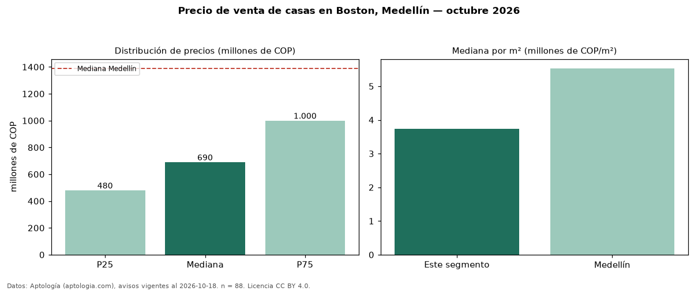

Precio de venta de casas en Boston, Medellín — octubre 2026
En Boston, Medellín, la mediana de precio de venta de casas es COP 690 millones, según 88 avisos vigentes. Eso es 50 % por debajo de la mediana de Medellín para casas (COP 1,39 mil millones). Por metro cuadrado, la mediana es COP 3,74 millones/m² (n = 88 avisos con área), 32 % por debajo de Medellín (COP 5,53 millones/m²). Con el precio por m² de arriendo del mismo segmento (COP 26.482/m² al mes), la rentabilidad bruta implícita es 8,5 % anual (aproximación con medianas de ofertas distintas). El área mediana anunciada es 200 m². El segmento con más oferta es el de 3 o más habitaciones (84 avisos, mediana COP 690 millones). La mitad central de los avisos va de COP 480 millones a COP 1,00 mil millones (razón 2,1), una dispersión alta. Por precio mediano es el puesto 31 de 39 barrios de Medellín con al menos 30 avisos de casas en venta (COP): en la franja media. Datos: Aptología (aptologia.com), CC BY 4.0 — https://www.aptologia.com/casas-en-venta/medellin/boston. Archivos: PDF, CSV con las cifras y gráfica PNG.

| Avisos únicos | 88 |
|---|---|
| Percentil 25 | COP 480.000.000 |
| Mediana | COP 690.000.000 |
| Percentil 75 | COP 1.000.000.000 |
| Mediana por m² | COP 3.736.656 |
Fuente: avisos vigentes de portales inmobiliarios recopilados por Aptología, deduplicados (mínimo 30 avisos únicos por celda). Precios pedidos, no cerrados. Fecha: 2026-10-18.